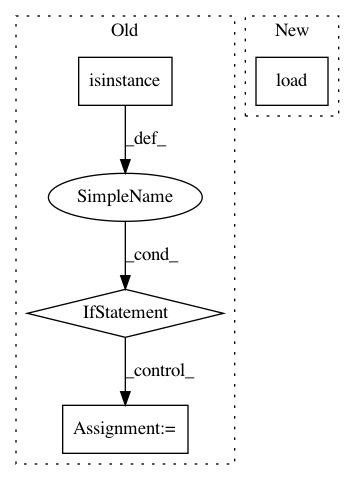

699ce9a0d6e19852f5d6171f86265b718bc860f8,python/src/nnabla/utils/nnp_graph.py,NnpLoader,__init__,#NnpLoader#Any#Any#Any#,458
Before Change
scope = OrderedDict()
self._params = scope
if isinstance(filepath, str):
_, ext = os.path.splitext(filepath)
else:
ext = extension
if ext == ".nnp":
// Load parameters to self._params rather than
// loading to global current scope.
with nn.parameter_scope("", self._params):
After Change
// The loaded parameters will be copied to the current
// scope when get_network is called.
self._params = scope if scope else OrderedDict()
self.g = nn.graph_def.load(
filepath, parameter_scope=self._params, rng=np.random.RandomState(1223), extension=extension)
self.network_dict = {
name: pn for name, pn in self.g.networks.items()
}
In pattern: SUPERPATTERN
Frequency: 4
Non-data size: 4
Instances
Project Name: sony/nnabla
Commit Name: 699ce9a0d6e19852f5d6171f86265b718bc860f8
Time: 2021-03-01
Author: woody.li@sony.com
File Name: python/src/nnabla/utils/nnp_graph.py
Class Name: NnpLoader
Method Name: __init__
Project Name: snorkel-team/snorkel
Commit Name: da0dd1052decff8fe2fd6d46a49992a91d7f232f
Time: 2016-09-02
Author: stephenhbach@gmail.com
File Name: snorkel/annotations.py
Class Name: CandidateFeaturizer
Method Name: create
Project Name: nltk/nltk
Commit Name: 1a12f305d555cdee56ea9f4b900e13dd2d652a1b
Time: 2019-09-02
Author: alvations@gmail.com
File Name: nltk/sentiment/vader.py
Class Name: SentiText
Method Name: __init__
Project Name: analysiscenter/batchflow
Commit Name: 98d1d7a0ad751fd91e6ec9c8ec6668bdea877cd1
Time: 2017-06-14
Author: rhudor@gmail.com
File Name: dataset/batch_image.py
Class Name: ImagesBatch
Method Name: load